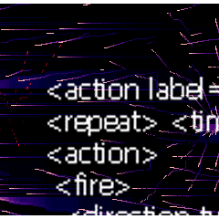

BulletML
|
BulletML ver. 0.21
|
(c) Kenta Cho(ABA."Saba")
|

Try BulletML demo applet to know what BulletML is like.
(Internet Explorer or Netscape Navigator 6 required)
Download the source files and BulletML definition files.
BulletML is the Bullet Markup Language.
BulletML can describe the barrage of bullets in shooting games.
(The storm of Progear, Psyvariar, Gigawing2, G DARIUS, XEVIOUS, ...)
There are many advantages for using BulletML.
- BulletML can describe the complicated barrage of bullets in
recent shooting games easily.
- BulletML demo applet is available. Write BulletML document,
and check it on this applet.
- BulletML is XML-based language.
It offers data portability and reusability.
BulletML RELAX definition and demo software are the free software.

BulletML is defined by a
RELAX grammar.
Java classes that handle BulletML documents are generated by
Relaxer.
If you have any comments, please mail to
cs8k-cyu@asahi-net.or.jp.